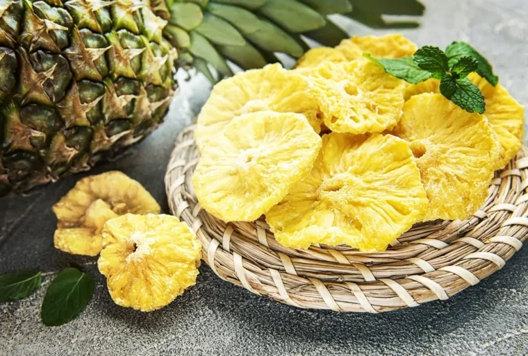
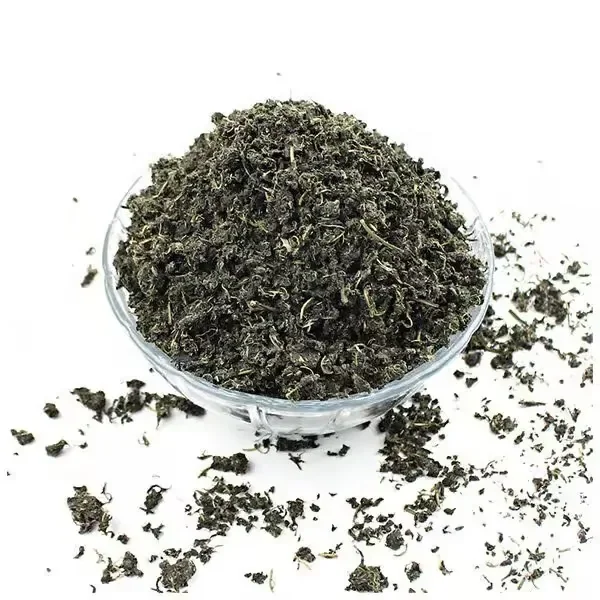

Früchte
Getrocknete Mango
Fruchtig im Müsli oder pur als Snack.
GETROCKNETE LEBENSMITTEL AUS KAMERUN
Von getrockneten Mangos bis zu Ndolé-Blättern: Entdecke Zutaten aus Kamerun fürs Frühstück, für unterwegs und für den Kochtopf.

Sortiment
Suche nach einer Zutat oder wähle eine Kategorie. Merke dir Produkte, um Preise und Verfügbarkeit anzufragen.
Keine passenden Produkte. Versuche einen anderen Suchbegriff.
Fruchtig im Müsli oder pur als Snack.

Für Joghurt, Frühstücksbowls und unterwegs.
Eine bunte Idee für Müsli und Snackmischungen.

Für Saucen, Reisgerichte und herzhafte Füllungen.

Eine Zutat für das kamerunische Gericht mit Erdnüssen.

Verwende es in Rezepten, die ausdrücklich Maniokmehl vorsehen.

Zum Ausprobieren in Rezepten für Kochbananenmehl, etwa für Fladen.
Schneide getrocknete Mango klein und mische sie mit Haferflocken, Joghurt und gerösteten Samen. Für mehr Frische passt ein Schuss Limettensaft.
Good Food · Tropical muesli bowlsIn Kamerun bezeichnet Ndolé sowohl die bitteren Blätter als auch das Gericht. Die Blätter werden mit Erdnüssen zubereitet. Je nach Variante kommen Garnelen, Fisch oder Fleisch hinzu.
Mehr zur Geschichte des Gerichts (WIPO)Über DK Bio
DK Bio entstand 2022 mit der Idee, mehr aus der heimischen Ernte zu machen. In Douala verarbeitet die Marke Erzeugnisse aus Kamerun zu getrockneten Lebensmitteln. So lassen sich Früchte, Gemüse und Blätter auch außerhalb der Erntezeit in der Küche verwenden.
Wähle Produkte im Katalog aus und öffne die Merkliste. Du kannst daraus eine E-Mail-Anfrage vorbereiten und um aktuelle Preise, Packungsgrößen und Liefermöglichkeiten bitten.
Die Angaben findest du auf der jeweiligen Packung. Vor dem Kauf kannst du bei DK Bio nach dem Etikett des konkreten Produkts fragen.
Kontakt
Deido, Douala, gegenüber der Schule Le Petit Monde